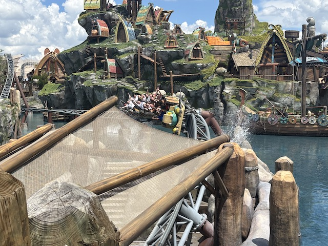
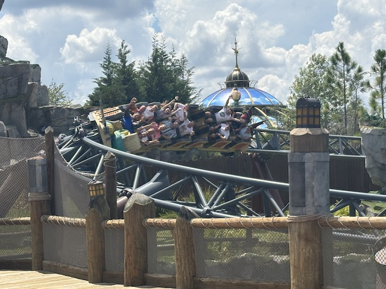
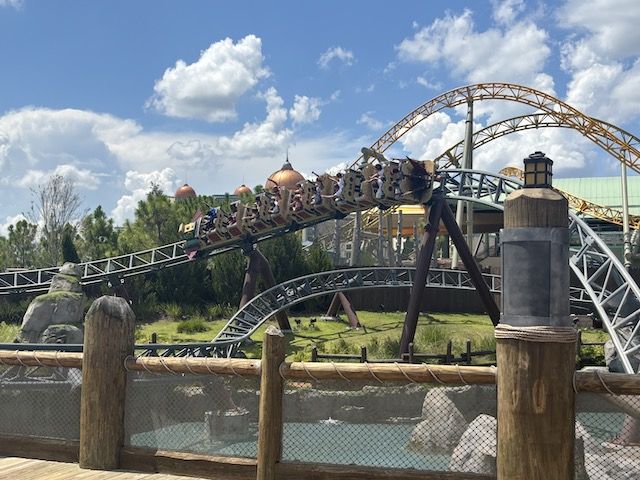
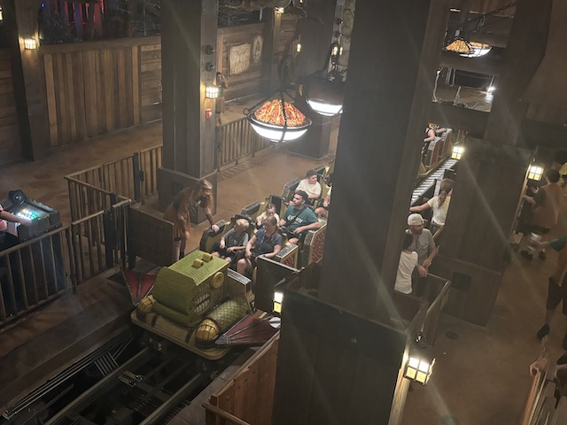

| |
Hiccup's Wing Gliders Review

Today, we'll be reviewing Hiccup's Wing Gliders @ Epic Universe, within the Universal Orlando Resort. This may not seem like anything special upon looking at it. It just seems like the parks family coaster in the Isle of Berk (the parks How to Train Your Dragon section). But this ride is FAR better than it appears to be. It is just a REALLY good family coaster. With that said, we hop in the trains, pull down the lap bar, and away we go! Hiccup tells us that we're getting ready to fly as we roll through a small curved dip and through an outward banked bunny hop? Ooh. How very RMC like. Which I TOTALLY approve of. We roll around the turn, approaching the lifthill. Hiccup tells us to get ready to fly as we stop. We see Toothless (the black dragon) pushing some red button, and then......WHOA!!! That's a launch and the lift hill is just a hill. Yeah. It's not a strong launch. But it's very fun, catches us off guard, and perfect for this ride. Soar into a curved hill and through a small dip before curving back down (Wave hi to Stardust Racers). Now this ride is meant to simulate flying, whih.....on the one hand, it REALLY feels like......why didn't they make this a suspended coaster since....that's usually what any coaster does trying to simulate flight. But.....despite that, Hiccups actually does a decent job at simulating flight despite that. It just has such a swoopy, graceful, and elegant feeling. Also, the music greatly helps. We then dip down into the water, zig zagging through some S bends before curving down underneath a bridge and into an upward curved hill. Nice! We then head up a curved helix before gliding through a couple banked turns, soaring low to the water and the ground. We glide into the brake run as Hiccup introduces us to some dragon eggs, which WARNING! These explode when they hatch. We glide through the brake run and stsart to head up the hill. But we roll back down. And.....Oh sh*t! The dragon eggs are hatching! BOOM!!! we launch up the hill before turning into a couple dips. These are in some structure. It's pretty cool theming. Plus, you get some nice headchoppers there. We go through a couple small hills, which.....hey! There's some mild airtime there! We then head through a small curved double down. It may not provide much airtime, but this is still cool. We then head into a highly banked turn, which.....Whoa! There's actually a couple laterals here. Nothing crazy, but there's some bite here! And....it's now over. We go through another turn and glide into the brake run, as Hiccup tells us about the importance of flying with your best friend (so long as your best friend is a Dragon. Mine is not, so I'm f*cked). So that's Hiccup's Wing Gliders. A family coaster that......it's just a ton of fun and a lot better than it looks. Far from my favorite coaster, but just a beautiful graceful family coaster. Definately check it out if you're at Epic Universe.
7/10
Location: Universal Orlando Resort (Epic Universe)
Opened: 2025
Built by: Intamin
Last Ridden: August 18, 2025
Hiccup's Wing Gliders Photos



Home
|